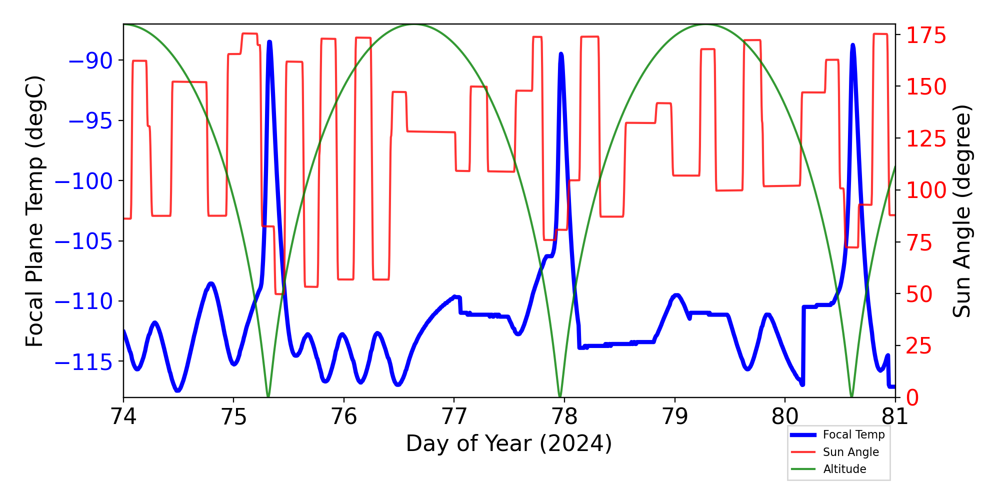

| CCD0 | CCD1 | CCD2 | CCD3 | CCD4 | CCD5 | CCD6 | CCD7 | CCD8 | CCD9 | |
|---|---|---|---|---|---|---|---|---|---|---|
| Previously Unknown Bad Pixels | ||||||||||
| Current Warm Pixels | (665,25) (803,225) (526,66) (353,201) (104,31) (178,149) | (21,95) | (670,387) | (335,412) | ||||||
| Flickering Warm Pixels | (798,494) | (802,665) (36,614) (985,393) (910,239) (427,125) (787,181) | (99,899) (837,378) (726,537) | (811,637) (680,391) (318,53) | (849,169) (287,164) (1000,214) | |||||
| Current Hot Pixels | ||||||||||
| Flickering Hot Pixels | ||||||||||
| Warm column candidates | 512 510 1022 | 512 1022 | ||||||||
| Flickering Warm column candidates |
ACIS Focal Plane Temperature
For this period, 8 peaks are observed.
| Day (DOY) | Temp (C) | Width (Days) | |
|---|---|---|---|
| 073.66 | -110.62 | 0.65 | |
| 074.30 | -111.85 | 0.37 | |
| 074.81 | -108.60 | 0.51 | |
| 075.33 | -88.49 | 0.83 | |
| 076.00 | -112.85 | 0.32 | |
| 076.31 | -112.67 | 0.33 | |
| 077.98 | -89.66 | 3.17 | |
| 079.84 | -111.14 | 0.47 |
Weekly focal plane temperature with sun angle, earth angle, and altitude overplotted. Sun angle is the solar array angle, that is the angle between the sun and the optical axis (+X axis). The earth angle is the angle between earth and the ACIS radiator (+Z axis). Altitude varies from 34 kkm to 128 kkm.

SIM Movements
16 TSC moves this period
| weekly average time/step | 0.00128 s |
|---|---|
| mission average time/step | 0.00132 s |
Telemetry
New violations or new extrema are shown in blue cells.
| MSID | 03/15/24 | 03/16/24 | 03/17/24 | 03/18/24 | 03/19/24 | 03/20/24 | 03/21/24 | yellow limits (lower) upper | red limits (lower) upper | Units | Description |
| 1CRBT | 677.96 | 677.96 | 677.96 | (136.15) 183.15 |
(131.15) 193.15 |
K | COLD RADIATOR TEMP. B | ||||
| 1CRBTC | (-99.04) | (-96.62) | (-96.62) | (136.15) 183.15 |
(131.15) 193.15 |
C | COLD RADIATOR TEMP. B | ||||
| AWD1TQI | (-3.35) | (-3.39) | (-1.22) 1.22 |
(-3.3) 3.3 |
AMP | WHEEL 1 TORQUE CURRENT | |||||
| AWD6TQI | (-3.43) | (-3.39) | (-3.43) | (-3.47) | (-1.22) 1.22 |
(-3.3) 3.3 |
AMP | WHEEL 6 TORQUE CURRENT | |||
| CALPALV | (120.00) | (126.0) 128.0 |
(125.0) 129.0 |
V | Cal Pulser Amplitude | ||||||
| CTXBPWR | (0.00) | (0.00) | (0.00) | (0.00) | (0.00) | (0.00) | (36.12) 37.0 |
(36.0) 38.0 |
DBM | TRANSMITTER B OUTPUT POWER | |
| ESAMYI | (0.06) | (0.06) | (0.06) | (5.63) 30.15 |
(5.3) 33.0 |
AMP | S/A -Y CURRENT | ||||
| ESAPYI | (0.14) | (0.14) | (0.14) | (5.54) 30.15 |
(5.2) 33.0 |
AMP | S/A +Y CURRENT | ||||
| HRMAAVG | 309.18 | 309.04 | 309.22 | 309.14 | (306.0) 308.0 |
(305.0) 309.0 |
K | AVG OF HRMA METRICS | |||
| MZOBACONE | 308.83 | 309.44 | 310.81 | 310.85 | 310.25 | (260.2) 303.0 |
(250.2) 308.0 |
CONE | -Z SIDE OBA CONE | ||
| OBAAVG | 301.19 | 301.30 | 301.54 | 302.95 | 302.83 | 302.55 | (282.5) 300.0 |
(281.4) 301.0 |
K | OBA/TFTE TEMP | |
| OBACONEAVG | 305.77 | 302.96 | 307.92 | (282.5) 300.0 |
(281.8) 301.0 |
K | OBA CONE AVG TEMP | ||||
| OBADIAGRAD | 4.42 | 4.61 | 4.45 | 4.68 | 4.47 | 4.60 | 4.62 | (-1.11) 3.5 |
(-2.78) 3.9 |
K | OBA DIAM GRAD |
| SPHBLV | (71.00) | (0.00) | (79.0) 128.0 |
(78.0) 129.0 |
(2SPHBLV) | Spect Bot & Top MCP HV Monitor | |||||
| SPHVLV | (70.00) | (0.00) | (72.0) 128.0 |
(71.0) 129.0 |
(2SPHVLV) | Spect Bot MCP HV Monitor | |||||
| TCM_PA1 | (260.05) | (259.69) | (259.69) | (259.32) | (260.05) | (259.32) | (258.96) | (269.15) 348.15 |
(260.15) 413.15 |
K | RF POWER AMP-1 EXT BPL TEMP |
| TCM_PA2 | (260.05) | (269.15) 348.15 |
(260.15) 413.15 |
K | RF POWER AMP-2 EXT BPL TEMP | ||||||
| TCM_TX1 | (268.43) | (267.70) | (267.70) | (267.33) | (268.43) | (267.70) | (266.61) | (283.15) 348.15 |
(269.15) 404.15 |
K | TRANSPONDER-1 EXT BPL TEMP |
| TFTERANGE | 46.41 | 47.73 | 48.28 | 47.99 | 48.84 | 48.49 | 48.26 | (16.7) 37.5 |
(11.1) 45.0 |
K | TFTE VENT/RAD TEMP |
| TSCTSF3 | (267.70) | (267.70) | (268.06) | (267.70) | (278.15) 359.15 |
(269.15) 483.15 |
K | SC-TS FITTING -3 TEMP |
IRUs
| Gyro Bias Drift | Gyro Bias Drift Histogram |
|---|---|

|

|
Recent Observations
| OBSID | DETECTOR | GRATING | TARGET | ANALYSIS | ACA |
|---|---|---|---|---|---|
| 29320 | ACIS-67 | NONE | SDSSJ111835.82+002511.2 | OK | OK |
| 29326 | ACIS-01236 | NONE | MCXCJ0216.3-4816 | OK | OK |
| 26928 | ACIS-0123 | NONE | MCXCJ0216.3-4816 | OK | OK |
| 29260 | HRC-I | NONE | NGC3245 | OK | OK |
| 26732 | ACIS-0123 | NONE | 2MASS J08194059+0823581 | OK | OK |
| 29322 | ACIS-67 | NONE | Gaia DR2 3128591106262731264 | OK | OK |
| 29327 | ACIS-2367 | NONE | ACT-CL J0947.9-0120 | OK | OK |
| 26715 | ACIS-3678 | NONE | NSA 91579 | OK | OK |
| 29321 | ACIS-67 | NONE | 2RXS J070441.1+090642 | OK | OK |
| 28161 | ACIS-67 | NONE | MCG-1-30-41 | OK | OK |
| 27069 | ACIS-012367 | NONE | LMC Deep Field 03 | OK | OK |
| 29352 | ACIS-67 | NONE | EP240315A | OK | OK |
| 27127 | ACIS-678 | NONE | PSO J173.4601+48.2420 | OK | OK |
| 26754 | ACIS-23567 | NONE | VCC 1273 | OK | OK |
| 26741 | ACIS-67 | NONE | SRGE J144738.4+671821 | OK | OK |
| 28758 | HRC-I | NONE | NGC4261 | OK | OK |
| 26907 | ACIS-67 | NONE | TXS 1713+218 | OK | OK |
| 27040 | ACIS-0123 | NONE | NGC 6242 | OK | OK |
| 26702 | ACIS-67 | NONE | ESO 500-34 | OK | OK |
| 29334 | ACIS-0123 | NONE | RMJ114329.6-014430.0 | OK | OK |
| 29338 | ACIS-67 | NONE | MCG-1-30-41 | OK | OK |
| 29336 | ACIS-012367 | NONE | LMC Deep Field 03 | OK | OK |
| 28756 | HRC-S | LETG | SNR 1987A | OK/NA | OK |
| 29333 | ACIS-67 | NONE | 3C279_s3 | OK | OK |
| 27097 | ACIS-3678 | NONE | SNR G310.6-1.6 | OK | OK |
| 29335 | ACIS-0123 | NONE | NGC 6242 | OK | OK |
| 29339 | HRC-I | NONE | NGC4261 | OK | OK |
| 27037 | ACIS-0123 | NONE | NGC 6242 | OK | OK |
Trending
This week's focus is Ground Computations
Last reported on
Jan 04.
Only the most interesting or representative msids are shown below.
For a full listing choose the bulletted link.
| MSID | Mean | RMS | Delta/Yr | Delta/Yr/Yr | Unit | Description | |
|---|---|---|---|---|---|---|---|
| 1dppwra | -0.557 | 0.007 | 34.06 +/- 6.18 | -0.00 +/- 0.16 | W | DPA POWER A | |
| 1dppwrb | -0.518 | 0.008 | 30.13 +/- 6.69 | -0.32 +/- 0.20 | W | DPA POWER B |
| MSID | Mean | RMS | Delta/Yr | Delta/Yr/Yr | Unit | Description | |
|---|---|---|---|---|---|---|---|
| flexadif | 0.041 | 0.008 | 65.08 +/- 5.28 | -0.03 +/- 0.08 | K | DIFF FLEX A & SET | |
| flexbdif | 0.219 | 0.007 | 61.50 +/- 4.79 | -0.02 +/- 0.08 | K | DIFF FLEX B & SET | |
| flexcdif | 0.090 | 0.013 | 73.75 +/- 8.99 | 0.10 +/- 0.24 | K | DIFF FLEX C & SET |
If you have any questions, please contact: swolk@head.cfa.harvard.edu